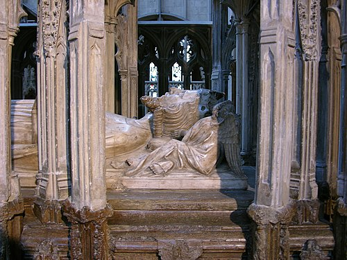
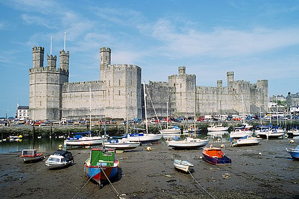

Bevezetes
II. Eduárd (1284. április 25. – 1327. szeptember 21.) Anglia királya 1307-től egészen 1327 januárjában történt lemondásáig.
I. Eduárd angol király negyedik fiaként született, de bátyjai korai halála miatt 1284-től ő volt a trón örököse. 1300-tól elkísérte apját annak skóciai hadjárataira, 1306-ban pedig látványos ünnepségen lovaggá ütötték a westminsteri apátságban. 1307-ben, apja halála után lépett trónra. A következő évben feleségül vette Izabellát, IV. Fülöp francia király lányát. A házassággal enyhíteni szándékoztak a két ország közötti feszültséget, amelyet a dél-franciaországi Gascogne jogállása okozott.
{kind=link}
Eduárd szoros és félreérthető kapcsolatot tartott fenn kegyencével, Piers Gavestonnal, akit kinevezett Cornwall grófjává. Viszonyuk természete nem ismert pontosan, lehet, hogy közeli barátok voltak, de lehetséges, hogy homoszexuális kapcsolat volt közöttük. Az arrogáns Gaveston egyre növekvő hatalma ellenérzéseket szült az angol főurak között, így Eduárd kénytelen volt száműzni őt. Visszatértekor a bárók kényszerítették a királyt, hogy fogadja el a politikai rendszert megreformáló, ún. 1311-es rendelkezéseket. A megerősödött főurak elűzték Gavestont, mire Eduárd hatályon kívül helyezte a rendelkezéseket és visszahívta kegyencét. A fellázadó urak, akiket a király unokatestvére, Lancaster grófja vezetett, 1312-ben elfogták és megölték Gavestont, ezzel több évig tartó fegyveres konfliktust indítottak el. Ennek lezárása után 1314-ben a skótok a bannockburni csatában megalázó vereséget mértek az angolokra, 1315–17 között pedig több évig tartó hideg, esős időjárás okozott hosszan tartó éhínséget. Mindez aláásta a király tekintélyét.
A király új barátokat és tanácsadókat talált, a Despenser családot; különösen ifjabb Hugh Despenserrel épített ki szoros kapcsolatot. 1321-ben Lancaster és támogatói megszállták a Despenserek birtokait és kényszerítették Eduárdot, hogy száműzze őket. A király ezután összegyűjtötte híveit és megtámadta az ellenzékbe tartozó főurakat. 1322 márciusában elfogták Lancastert, és gyors tárgyalás után lefejezték. Eduárd és kegyencei visszavonták a korábbi, főuraknak kedvező reformokat, bebörtönözték ellenfeleiket, birtokaikat elkobozták. Időközben megromlott Eduárd és Izabella házassága, és amikor a királynét Párizsba küldték, hogy segítsen megkötni az angol–francia békét, nem volt hajlandó visszatérni Angliába. Izabella viszonyt kezdett a Párizsban száműzetésben élő, ellenzéki Roger Mortimerrel, majd Eduárd ellenségeit összegyűjtve 1326-ban átkeltek Angliába, ahol a népszerűtlen király hivatalnokai, hűbéresei sorra álltak át hozzájuk. Eduárd Walesbe menekült, ahol 1326 novemberében elfogták, 1327 januárjában pedig kényszerítették, hogy tizennégy éves fia, Eduárd javára mondjon le a trónról. Ezután fogságban tartották, egészen 1327. szeptember 21-én bekövetkezett haláláig; valószínűleg meggyilkolták.
Ifjúsága (1284–1307)
II. Eduárd 1284. április 25-én született az észak-walesi Caernarfon várában I. Eduárd angol király és felesége, Kasztíliai Eleonóra negyedik fiaként.[5] A király alig egy évvel korábban hódította meg és csatolta Angliához a régiót, és valószínűleg szándékosan választotta a helyszínt fia születéséhez, mert a walesiek hercegének szánta.[6]
Eduárdnak három bátyja volt: János és Henrik már meghalt, mire ő megszületett, Alfonz pedig néhány hónappal később, 1284 augusztusában hunyt el, így ő maradt a királyság egyetlen trónörököse.[7] Megszületése után egy Mariota vagy Mary Maunsel nevű dajkára bízták, majd miután az beteg lett, Alice de Leygrave gondoskodott a csecsemőről.[8][9][10] Kisgyerekként alig ismerte anyját, aki élete első néhány évében állandóan Gascogne-ban tartózkodott az apjával együtt.[8][9][10] A trónörökös számára külön udvartartást állítottak fel, melyet Giles of Oudenarde, 1293 után pedig William of Blyborough vezetett.[11] Vallásos neveléséről feltehetően azok a dominikánus barátok gondoskodtak, akiket anyja 1290-ben irányított udvartartásába.[12] Lovagolni és fegyvert forgatni nagyanyja egyik csatlósa, Guy Ferre tanította.[13] Nincs rá konkrét bizonyíték, hogy Eduárd megtanult volna írni-olvasni, bár az anyja gondot fordított testvérei megfelelő oktatására és Ferre a maga korában tanult embernek számított.[14][15] Korábban úgy gondolták, hogy oktatása hiányos volt, főleg, mert koronázási esküjét nem latinul, hanem franciául mondta el, és mert érdeklődött a földművelés iránt; újabban a történészek megítélése szerint ezekből túlzás lenne azt a következtetést levonni, hogy tanulatlan lett volna.[16][15][17] A mindennapok során feltehetően a normandiai francia nyelvet használta, emellett némi angolt és talán a latint is.[18]
{kind=link}
Bár korábban úgy vélték, hogy személyisége a szülői közelség és szeretet hiányára, valamint hirtelen haragú és sokat követelő apja hatására vezethető vissza, Eduárd a királyi családokban szokásos neveltetésben részesült,[19][20] nem állítható, hogy különösebben elhanyagolták, vagy másképp kezelték volna.[19][21][22] A fiatal herceg érdeklődött a lovak és a lótenyésztés iránt és igen jól ülte meg a lovat; kedvelte a kutyákat is, különösen az agarakat.[23] Leveleiben szó esik arról, hogy barátainak tréfából nehezen megülhető lovakat vagy lusta vadászkutyákat küldött ajándékba.[24][25] A nemesek akkori népszerű időtöltése, a vadászat és solymászat kevéssé kötötte le.[26] Szerette a zenét, beleértve a walesi zenét, az akkoriban divatba jött crwth vonós hangszert és az orgonát.[27][28] Támogatta a lovagi tornákat, de ő maga nem vett részt rajtuk, talán mert a trón egyetlen várományosaként túlságosan veszedelmes tevékenység lett volna számára.[29][30]
Eduárd magas és izmos, a kor mértéke szerint jóképű fiatalemberré serdült.[31][32] Jó szónoknak tartották, cselédsége pedig áldotta nagylelkűségéért.[33][34] Az arisztokrácia körében szokatlan módon szeretett evezni, szívesen bíbelődött a sövények karbantartásával és sok időt töltött munkásokkal, cselédekkel és az alsó néprétegek egyéb képviselőivel.[35][36]
1290-ben a király eljegyezte hatéves fiát a skót trón örökösével, a Norvégiában nevelkedő Margittal.[32][37] Margit azonban még abban az évben meghalt, amikor visszatért volna Skóciába. Röviddel ezután Eduárd anyja, Eleonóra és apai nagyanyja, Provence-i Eleonóra is elhunyt.[38] A kétségbeesett király hatalmas temetési ceremóniát rendezett a felesége számára, akinek birtokát, a franciaországi Ponthieu grófságot Eduárd örökölte.[38] A sikertelen skót jegyesség után a trónörököst egy francia hercegnővel akarták összeházasítani, de aztán 1294-ben kitört a háború a franciákkal.[39][40] A következő jelölt Guidó flamand gróf lánya lett volna, de a frigyet IV. Fülöp francia király megakadályozta.[39][40]
A skóciai hadjárat
1297–1298-ban I. Eduárd Flandriába vezetett hadjáratot IV. Fülöp ellen, és amíg távol volt, fiára bízta Anglia ügyeit.[41] Visszatérése után békét kötött a franciákkal, amelyet azzal pecsételtek meg, hogy feleségül vette Fülöp nővérét, Margitot, a trónörököst pedig eljegyezték Fülöp akkor még csak kétéves lányával, Izabellával.[42][43] A házasság elvben azt eredményezte volna, hogy Gascogne tartomány (amelynek birtoklásért folyt a háború) így a következő nemzedékben mind I. Eduárd, mind IV. Fülöp leszármazottja tulajdonába kerül, véget vetve a két ország közti feszültségnek.[44] A herceg jó viszonyban volt új mostohaanyjával, aki 1300-ban és 1301-ben két fiút is szült, Tamást és Edmundot. Őket Eduárd trónra lépése után megfelelően ellátta címekkel és jövedelemmel.[45]
A király 1300-ban hadjáratot indított az ellene fellázadó Skóciába, és ezúttal magával vitte a fiát, aki Caerlaverock ostrománál a hátvédnek parancsolhatott.[46] 1301 tavaszán I. Eduárd kinevezte a trónörököst Wales hercegévé, egyúttal neki adományozta Chester grófságát, valamint jelentős észak-walesi birtokokat.[47] A herceg fogadta új vazallusai hódolatát, majd 300 katonával északra indult, csatlakozott apja skóciai hadjáratához és elfoglalta Turnberry várát.[48] 1303-ban ismét Skóciában hadakozott, saját ostromgépeivel megostromolta Brechin várát.[49] 1304 tavaszán apja nevében tárgyalásokat folytatott a skót felkelők vezetőivel és azok kudarca után csatlakozott a királyhoz, aki éppen Stirlinget tartotta ostrom alatt.[50]
1305-ben Eduárd és apja valószínűleg anyagi okok miatt összekülönbözött egymással.[51] A trónörökös összeveszett Walter Langton kincstárnokkal, aki nem adott neki elegendő pénzt, de a király megvédte kincstárnokát; fiát és barátait elűzte az udvarától, és teljesen megszüntette fia javadalmazását.[52] A családtagok és a barátok közvetítésével hamarosan kibékültek egymással.[53]
A skót konfliktus 1306-ban új erőre kapott, amikor Robert Bruce megölette riválisát, John Comynt, és kikiáltotta magát Skócia királyává.[54] I. Eduárd új hadsereget gyűjtött, de ezúttal hivatalosan fiát bízta meg a főparancsnoksággal; kinevezte Aquitánia hercegévé és barátaival együtt lovaggá ütötte a westminsteri apátságban.[55] A király utasítása szerint könyörtelenül le kellett számolni Róbert király támogatóival, de nem ismert, hogy a hercegnek mekkora szerepe volt az angol csapatok által elkövetett mészárlásokban.[56] A trónörökös szeptemberben visszatért Angliába, hogy megtárgyalják esküvője részleteit.[57]
Piers Gaveston
Eduárd körülbelül ekkor barátkozott össze Piers Gavestonnal.[58] Gaveston a király egyik udvari lovagjának fia volt, aki 1300 körül csatlakozott a trónörökös udvartartásához, feltehetően az uralkodó utasítására.[59] A fiatal apród közel került a herceghez és 1306-ban együtt ütötték őket lovaggá.[60][61] 1307-ben I. Eduárd ismeretlen okból Gascogne-ba száműzte Gavestont.[62] Az egyik krónika szerint a herceg arra kérte a királyt, hogy engedélyezze Ponthieu grófságának (anyai örökségének) odaadományozását Gavestonnak, mire az apja úgy feldühödött, hogy marékszámra tépte ki a fia haját, majd elkergette udvarából a kegyencet.[63] A hivatalos udvari okiratok szerint azonban Gavestont csak ideiglenesen küldték el, és közben rendszeres juttatásokban is részesült; elképzelhető, hogy eltávolításával csak a herceget akarták büntetni valamilyen okból.[64][65]
Vitatott, hogy Eduárdnak volt-e homoszexuális kapcsolata Gavestonnal. A későbbi krónikások ezzel vádolták, de kapcsolatuk konkrét részleteiről kevés tényleges bizonyíték áll rendelkezésre.[66][67] A szodómiát a 14. századi angol egyház élesen elítélte, éppen akkora bűnnek tartotta, mint az eretnekséget. Eduárdnak és Gavestonnak is volt felesége és gyerekeik, emellett Eduárdnak egy törvénytelen fia is született, és feltehetően viszonya volt unokahúgával, Eleanor de Clare-rel is.[68][69][70]
A szexuális jellegű kapcsolatra a fő bizonyíték egy anonim, 1320-as években író krónikás, aki szerint Eduárd „oly nagy szeretetet” érzett Gaveston iránt, hogy „az állhatatosság frigyére lépett, és minden más halandó előtt álló, megbonthatatlan szerelemmel kötötte össze magát vele”.[71] Az első konkrét utalás arra, hogy Eduárd más férfiakkal közösült volna, 1334-ből származik, amikor Adam Orleton winchesteri püspököt azzal vádolták, hogy 1326-ban azt állította a királyról, hogy „szodomita”. Orleton azzal védekezett, hogy nem a királyra gondolt, hanem tanácsadójára, ifjabb Hugh Despenserre.[72] Az 1390-es években írt Meaux Krónika csak annyit ír, hogy Eduárd túlságosan átadta magát a szodómia bűnének.[73]
Az is lehetséges, hogy a herceg és Gaveston egyszerűen csak közeli barátok voltak.[74] Korabeli konkrét állítás nincs a homoszexuális viszonyukról, Orleton vádjai pedig legalábbis részben politikai hátterűek; nagyon hasonlóak ahhoz, mint amikor VIII. Bonifác pápát vagy a templomos lovagokat vádolták szodómiával, hogy befeketítsék őket.[75] A későbbi krónikák állításai visszakövethetőek Orleton eredeti vádjához.[76][77] Egyes történészek szerint a királyi udvarban nem maradhatott volna rejtve egy ilyen affér, de sem az egyház, sem a király, sem a herceg apósa nem kritizálta Eduárd intim kapcsolatait.[78][79][80] Egy másik feltevés szerint Eduárdot és Gavestont vértestvéri kötelék fűzte össze.[81][82] A hasonló szerződések, ahol a felek megesküdtek, hogy testvérként támogatják egymást, nem voltak ritkák a középkorban.[83] A két ifjú kapcsolatát sok krónika testvérinek írja le, és az egyik meg is jegyzi, hogy a herceg fivérévé fogadta Gavestont.[77] Egy hasonló fogadalom azonban nem zárja ki a szexuális kapcsolatot sem.